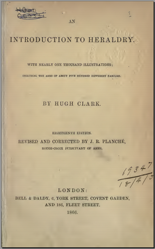

An Introduction to Heraldry By HUGH CLARK, 18th Edition, corrected and updated by J.R.PLANCHE Bell & Daldy 1866
Excellent general introduction and overview, colour reproduction stained but readable. PDF version text searchable, OCR accuracy 95% plus.
NOTE: There are earlier editions (e.g. 15th) of this work also available here and in Google books, this is the most recent I can find.
One Volume ( introductiontohe00claruoft )
(Add 14 to get PDF page number) Arms, The Use Of 2 Arms, The Abuse Of 3 Arms, Classes Of 5 Arms Of Dominion 5 Arms Of Pretension 5 Arms, Assumptive 6 Arms Of Community 6 Arms Of Patronage 6 Arms Of Alliance 7 Arms Of Adoption 7 Arms Paternal And Hereditary 7 Arms Of Succession 7 Arms Of Concession 8 Arms, Canting 9 Escutcheon, Description Of 9 Escutcheon, Points Of The 10 Colours 11 Tinctuers And Furs 11 Furs 12 Ordinaries Partition Lines 13 Subordinaries 16 Borders 17 Crosses 19 Charges 20 Charges, Their Various Heraldic Terms 25 Blazoning, Rules Of 31 Rules Of Blazoning 31 Blazoning Of Charges 32 Blazoning Of Ordinaries 32 Blazoning Of Animals 33 Blazoning Of Birds 34 Blazoning Of Fishes 35 Blazoning Of Heavenly Bodies 36 Blazoning Of Trees And Vegetables 36 Blazoning Of Man And His Parts 37 Examples Of Blazonry 37 Heraldic Abbreviations 48 Arms Of A Maid 50 Marshalling 56 Arms Of A Husband And Two Wives 57 Arms Of A Dowager Or Maiden Lady 58 Arms Of A Widow 58 Arms Of A Widow And Heiress 58 Arms Of A Bachelor 59 Arms Of An Heiress And Co-Heiress 59 Arms Of A Wife And Two Husbands 59 Arms Of A Bishop 60 Arms Of A Knight Of The Garter And Lady Marrying A Commoner 60 Arms Quarterly 60 Arms Of A Baronet 61 Arms Of A Commoner And Lady 62 Exterior Ornaments Of The Escutcheon 62 Helmets 62 Marshalling Bordered Coats 62 Mantling 63 Wreath 64 Badges 65 Crest 65 Motto 66 Suppoeters 66 Hatchments, Explanation Of 69 Architecture And Heraldry 71 Heraldry In Conjunction With Architecture 71 Dictionary Of Technical Terms 81 Crowns 117 Alphabetical List Of Heraldic Terms, In English, French, And Latin 207 King 213 Nobility And Gentry, The Different Degrees 213 Rank And Nobility, Manual Of 213 Queen 217 Royal Titles 219 Arms Royal 222 Duke 223 Prince Of Wales 223 Marquis 225 Earl 226 Viscount 227 Archbishops And Bishops 228 Bishops 228 Barons 229 Privileges Of Peers 230 Baronets 231 Garter, Order Of The 232 Knighthood, Orders Of, In England 232 Garter K1ng-Of-Arms 236 Bath, Order Of The 240 St Patrick, Oeder Of 242 Thistle, Order Of The 242 Hanoverian Guelphic Order 243 St Michael And St George, Orders Of 244 Star Of India, Order Of The 245 Knights Bannerets 246 Knights Bachelors 247 Esquires 248 Gentleman 250 Yeoman 252 Precedency 255 Precedency Of Men, Table Of 258 Precedency Of Women, Table Of 261 Great Officers Of State And Royal Hoisehold 263 Lord High Steward 263 Lord High Chancellor 263 Lord High Treasurer 264 Lord Great Chamberlain 265 Lord President Of The Council 265 Lord Privy Seal 265 Lord High Constable 268 Earl Marshal 269 College Of Arms 272 Garter K1ng-Of-Arms 272 Heraldry, Introduction To Heralds' College, And Heralds 272 Pursuivants 272 Lyon King-Of-Arms 273 Ulster King-Of-Arms 273 Lord High Admiral 274 Secretaries Of State 274 Lord Steward Of The Household 275 Privy Council 275 Lord Chamberlain Of The Household 276 Groom Of The Stole 277 Master Of The Horse 277 Treasueer Of The Household 277 Comptroller Of The Household 278 Gentleman At Arms 278 Lord Almoner 278 Yeomen Of The Guard 279
Plate I is on PDF page 6, plates II onwards on PDF page 295 onwards (with a blank page between each)